Software Development Life Cycle
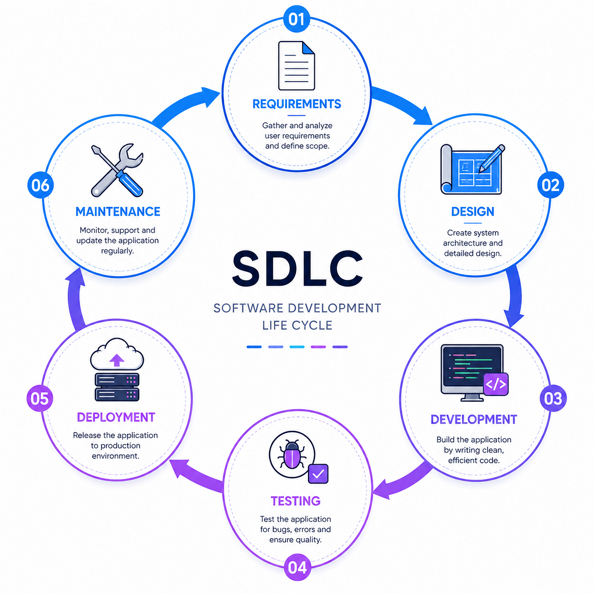
Software Process Models
Software process models define what specific activities are included in a software process and in what order they are included.
Different projects use different process models depending on requirements, risk, customer involvement, testing needs, project size, and uncertainty.
Waterfall Model
The Waterfall Model is a linear sequential flow in which progress is seen as flowing steadily downwards, like a waterfall, through the phases of software development.
This means that any phase in the development process begins only if the previous phase is complete.
The Waterfall approach does not define a process to go back to the previous phase to handle changes in requirements.
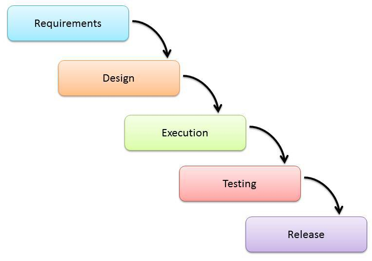
✓ Advantages
- Easy to explain to users.
- Stages are well defined.
- Helps plan and schedule the project.
- Each phase has specific deliverables.
✕ Disadvantages
- Assumes requirements can be frozen.
- Very difficult to go back to a completed stage.
- Little flexibility.
- Changing scope can be difficult and expensive.
- Can require significant time and detailed planning.
V-Shaped Model
The V-Shaped Model is an extension of the Waterfall Model.
Instead of moving down in a linear way, the process steps are bent upwards after the implementation and coding phase, forming the typical V shape.
The V-Model emphasizes early test planning.
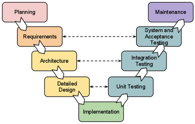
✓ Advantages
- Simple and easy to use.
- Each phase has specific deliverables.
- Test plans are developed early.
- Higher chance of success than Waterfall in suitable projects.
- Works well when requirements are easily understood.
- Strong emphasis on verification and validation.
✕ Disadvantages
- Very inflexible, like Waterfall.
- Scope changes are difficult and expensive.
- No early working prototype is produced.
- Problems found during testing can be difficult to address.
- Requires detailed planning.
Prototyping Model
The Prototyping Model refers to the activity of creating prototypes of software applications, such as incomplete versions of the software being developed.
A prototype is used to visualize some components of the software and reduce misunderstanding of customer requirements by the development team.
This can reduce the iterations that may occur in the Waterfall approach and that are difficult to implement because of Waterfall's inflexibility.
Build something visible → get feedback → understand requirements better.
Types of Prototyping
01. Throwaway
The prototype is eventually discarded rather than becoming part of the final delivered software.
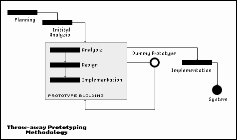
02. Evolutionary
The prototype evolves into the final system through iterative incorporation of user feedback.
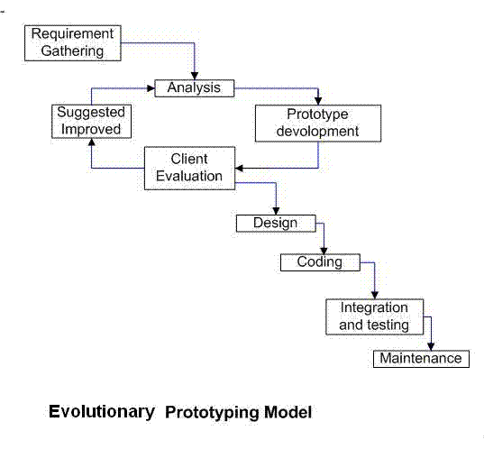
03. Incremental
The final product is built as separate prototypes which are eventually merged into an overall design.
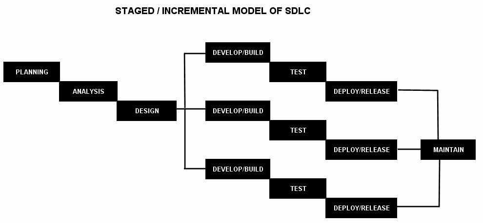
01. Throwaway Prototyping
02. Evolutionary Prototyping
03. Incremental Prototyping
✓ Advantages
- Can reduce development time and costs.
- Improves user involvement.
- Helps clarify misunderstood requirements.
✕ Disadvantages
- Excessive time may be spent developing prototypes.
- Implementing prototypes can be costly.
Spiral Model
The Spiral Model combines iterative development with risk analysis.
It emphasizes risk reduction at every step.
The model is evolutionary — the system grows in increments, but each cycle focuses on evaluating and mitigating risks.
Each loop in the spiral represents a cycle in the process. There are no fixed phases such as specification or design; the activities in each loop are chosen depending on what is required.
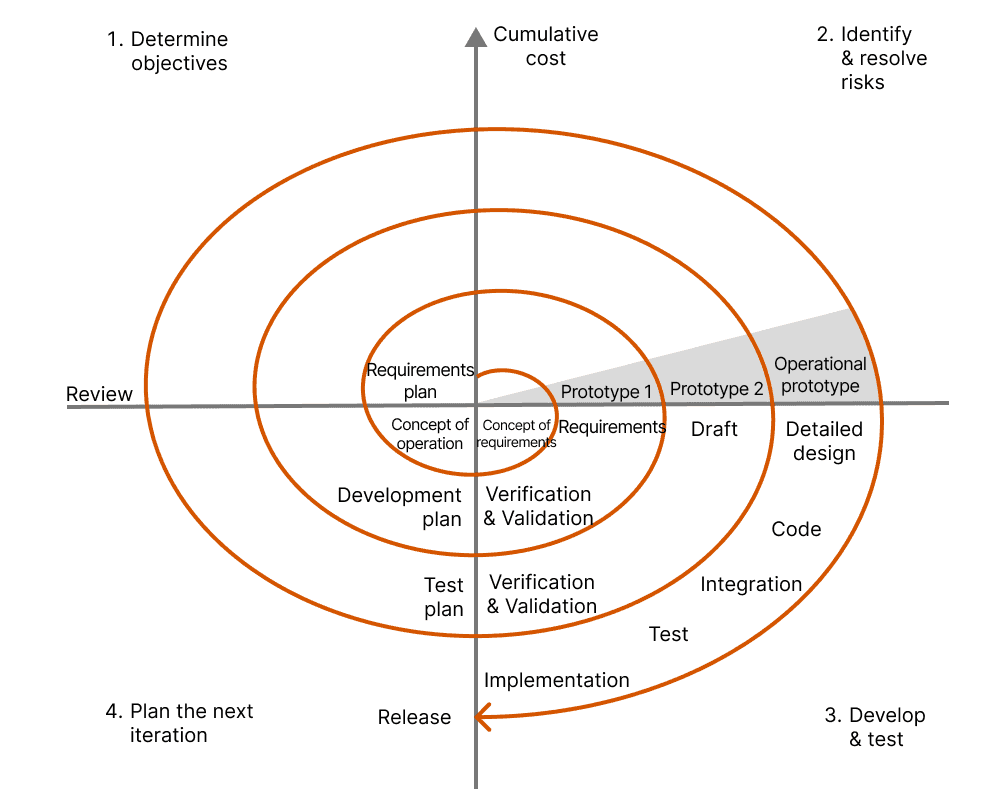
Typical Spiral Cycle
Define objectives and requirements.
Identify and resolve important risks.
Develop and test the solution.
Evaluate results and plan the next cycle.
✓ Advantages
- Estimates become more realistic as work progresses.
- Important issues can be discovered earlier.
- Early involvement of developers.
- Strong risk management.
- Develops the system through phases.
✕ Disadvantages
- High cost and time to reach the final product.
- Requires special skills for risk evaluation.
- Highly customized, which can limit reusability.
Iterative & Incremental Model
The Iterative and Incremental Model was developed to overcome weaknesses of the Waterfall Model.
It starts with initial planning and ends with deployment, with cyclic interactions in between.
The basic idea is to develop a system through repeated cycles (iterative) and in smaller portions at a time (incremental).
Developers can take advantage of what was learned during development of earlier parts or versions of the system.
It can consist of mini-Waterfalls or mini V-Shaped models.
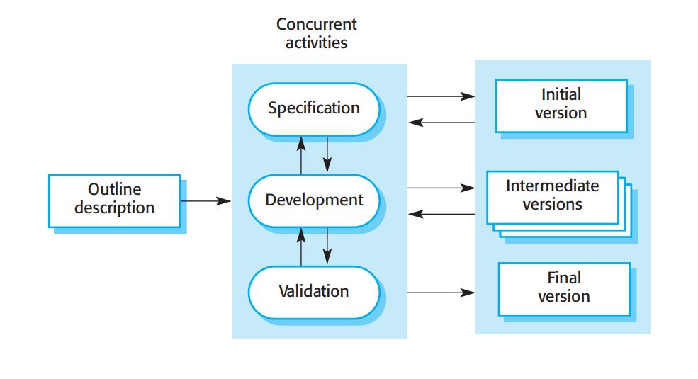
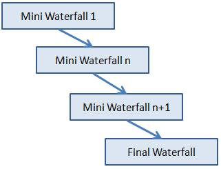
Example
Incremental = add functionality piece by piece.
Iterative = repeatedly improve/refine the system.
A project can be both iterative and incremental.
✓ Advantages
- Produces business value early.
- Better use of scarce resources.
- Can accommodate some change requests.
- More focused on customer value.
- Project issues can be detected earlier.
✕ Disadvantages
- Integration between iterations can become an issue if not considered during planning.
Quick Comparison
| Model | Main Idea | Best When |
|---|---|---|
| Waterfall | Linear sequential development | Requirements are stable |
| V-Model | Development + corresponding testing | Verification and validation are critical |
| Prototyping | Build prototypes to understand requirements | Requirements are unclear |
| Spiral | Iterative development + risk analysis | Risks are significant |
| Iterative & Incremental | Build, refine and add functionality gradually | Early delivery and feedback are useful |
Summary
- Waterfall → Stable requirements
- V-Model → Testing / verification & validation
- Prototyping → Unclear requirements
- Spiral → Risk analysis
- Incremental → Add functionality
- Iterative → Refine / improve
AI Native Model
Instead of a linear flow, the process becomes a loop, and AI is embedded at each point.
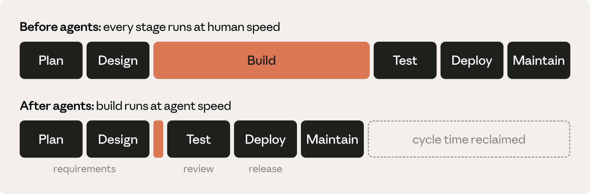
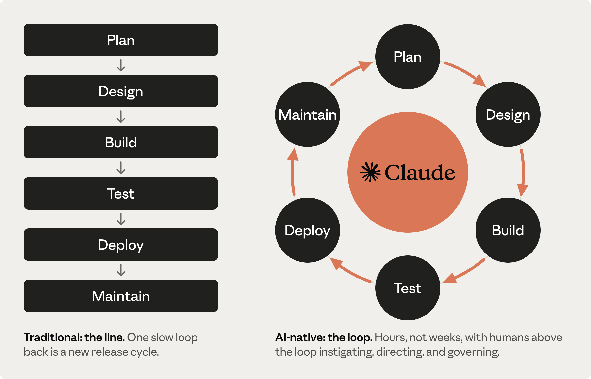
References
Software Engineering - Ian Sommerville Chapter 2 Edition 10
https://melsatar.blog/2012/03/15/software-development-life-cycle-models-and-methodologies
https://www.reqview.com/static/0778058361ccf9729e358bac43095818/a3627/SpiralModel.png
https://encrypted-tbn0.gstatic.com/images?q=tbn:ANd9GcSc3IDhZRxo3azXqPz-MWbHclqQlnbo0svZkIm_yGyb-Q&s=10
https://academy.claude.com/courses/ai-native-sdlc-playbook/introduction#what-is-an-ai-native-sdlc
https://www.researchgate.net/profile/Manan-Shah/publication/301513304/figure/fig2/AS:352803013840897@1461126201767/ncremental-ModelAdapted-From-Google-Images-211-Fringe-benefit-of-Incremental-Model.png